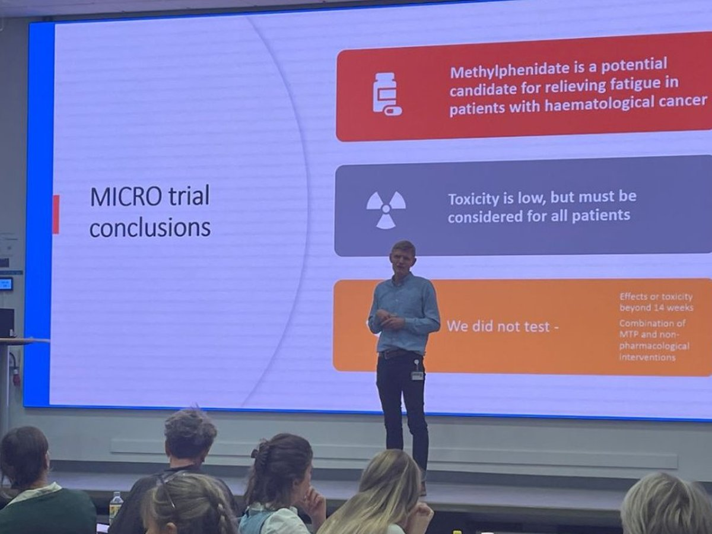

Hæmatologisk Afdeling, Odense Universitetshospital
Quality of Life Research Center
Vi bringer patientens perspektiv ind i hæmatologisk forskning, kliniske forsøg og behandling.
- 2017Etableret
- 12Igangværende studier og studier i tidlig fase
- 6Forskningsområder
QoLRC
Om centret
Quality of Life Research Center (QoLRC) undersøger, hvordan hæmatologiske sygdomme og deres behandling påvirker patienternes hverdag. Vi arbejder med patientrapporterede oplysninger (PRO) og helbredsrelateret livskvalitet (HRQoL) ved hæmatologiske kræftsygdomme og godartede hæmatologiske sygdomme.
Centret blev etableret i 2017 som en strategisk investering i Hæmatologisk Afdeling og Hæmatologisk Forskningsenhed på Odense Universitetshospital og er tilknyttet Syddansk Universitet. QoLRC er core facility for forskning i livskvalitet i Nordic Myeloma Study Group (NMSG) og bygger på 35 års erfaring med livskvalitetsdata fra nordiske myelomatoseforsøg. Vi samarbejder også tæt med Nordic ITP Group om patientrapporterede oplysninger inden for benign hæmatologi.
Vores arbejde dækker hele vejen gennem forskning i patientrapporterede oplysninger: planlægning og analyse af livskvalitetsendepunkter i kliniske forsøg, opfølgning af patienter i den daglige klinik og i populationsbaserede data, udvikling og validering af spørgeskemaer samt evaluering af nye behandlingsformer, fx hjemmebehandling og behandling tilpasset ældre, skrøbelige patienter.
Vores vision er at etablere et tværfagligt center for forskning i helbredsrelateret livskvalitet på internationalt niveau i tæt samarbejde med klinikere, statistikere, patientrepræsentanter, patientforeninger og forskningspartnere i Norden og Europa.
Vores forskning
-
PRO i kliniske forsøg
Planlægning, indsamling og analyse af patientrapporterede oplysninger i randomiserede og enkeltarmede forsøg efter internationale standarder for PRO-endepunkter og estimands.
-
Udvikling og validering af spørgeskemaer
Udvikling og psykometrisk validering af spørgeskemaer, så det, der betyder noget for patienterne, kan måles pålideligt, efter COSMIN-principper.
-

Myelomatose
Livskvalitet under moderne myelomatosebehandling, herunder behandling styret af målbar restsygdom (MRD) og langvarig vedligeholdelsesbehandling.
-
Autoimmune cytopenier
Måling af symptombyrden ved immun trombocytopeni (ITP), autoimmun hæmolytisk anæmi (AIHA) og deres behandling, herunder binyrebarkhormon.
-
Ældre patienter og skrøbelighed
Brug af geriatriske screeningsværktøjer som G8 til at forstå sammenhængen mellem skrøbelighed, behandlingstolerance og forløb hos ældre patienter med kræft.
-
Patientinddragelse
Samarbejde med patienter og patientforeninger, så vores spørgsmål, metoder og resultater afspejler det, der betyder mest for dem, vi forsker sammen med.
Seneste nyt
Alle nyheder →-

Forskning i fokus på Hæmatologisk Afdeling
Kolleger fra hele Hæmatologisk Afdeling på Odense Universitetshospital samledes til den årlige eftermiddag Forskning i fokus, som Henrik Frederiksen stod for. Programmet omfattede akut leukæmi og hæmatopatologi, lymfom og cellulære terapier, myelomatose og amyloidose, hjemmebehandling og understøttende behandling, livskvalitet og populationsbaseret forskning samt benign hæmatologi og skrøbelighed. Hans Henrik Knudsen, som er patientrepræsentant i Lene Kongsgaard Nielsens livskvalitetsforskning i QoLRC, fortalte om betydningen af patientinddragelse i forskningen. Fra QoLRC præsenterede Henrik Frederiksen, Pia Pedersen, Tine Rosenberg, Anne Møller Clausen og Klara Rydahl deres arbejde.
-

SSQ-MM-valideringsstudiet præsenteret på ISOQOL 2026 i Prag
Helena Møgelbjerg Ditzel præsenterede en poster om den multinationale psykometriske validering af Steroid Symptom Questionnaire – Multiple Myeloma (SSQ-MM) hos patienter med immun trombocytopeni (ITP) og autoimmun hæmolytisk anæmi (AIHA) på den 33. årlige konference i International Society for Quality of Life Research (ISOQOL) i Prag. Studiet skal inkludere 180 patienter i Danmark, Norge, Sverige og Storbritannien og udvikler desuden en svensk version af spørgeskemaet.
-
Bevilling fra Stiftelsen Dam til REMNANT-studiets livskvalitetsdel
REMNANT-studiets delstudie om patientrapporterede oplysninger har fået støtte fra den norske fond Stiftelsen Dam gennem den norske blodkræftforening (Blodkreftforeningen). REMNANT er et nordisk randomiseret forsøg ledet af Oslo universitetssykehus, hvor behandlingen af nydiagnosticeret myelomatose styres af målbar restsygdom. Bevillingen støtter livskvalitetsanalyserne i studiets del 2, som udføres i QoLRC og ledes af Helena Møgelbjerg Ditzel.
Rådgivning og samarbejde
Planlægger du et studie med patientrapporterede oplysninger? Vi rådgiver om valg af spørgeskemaer, PRO-endepunkter, statistiske analyseplaner og fondsansøgninger og indgår gerne i nye samarbejder.